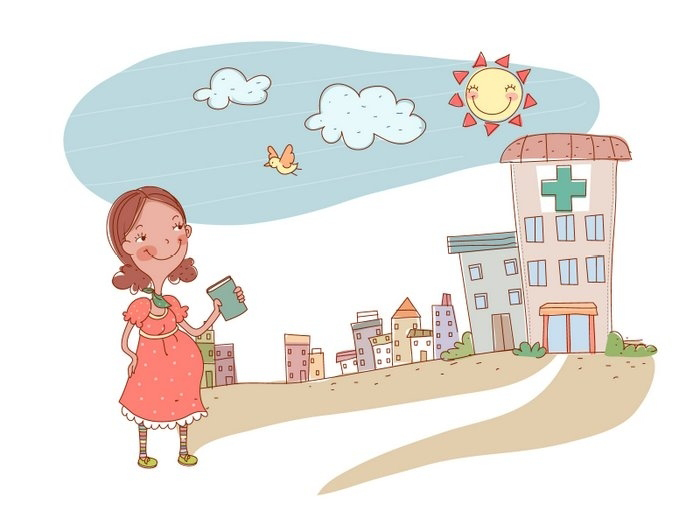
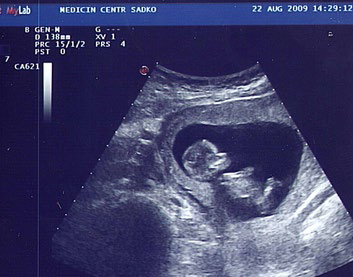
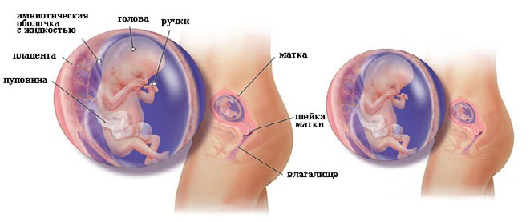

12 неделя беременности
Крошка всё больше становится похожим на человечка, но голова продолжает быть больше туловища. И хоть конечности ещё совсем маленькие, они уже сформированы. Ребёнок научился морщить губки, сжимать кулачки, строить гримасы, открывать и закрывать ротик. А ещё он умеет глотать окружающую его жидкость и мочиться. Мозг ребёнка разделился на два полушария.
Длина малыша: 6,1 см.
Вес малыша: 10 г.
Двенадцатая неделя является заключительной в первом триместре. Теперь проблема токсикоза, мучавшего беременных женщин на протяжении последних 5-7 недель, постепенно будет уходить в прошлое.
К 12 неделе головной мозг ребенка уже практически сформирован и напоминает миниатюрную копию головного мозга взрослого человека. Скелет ребенка проходит фазу оссификации, когда образуется костное вещество. На его крошечном тельце появляются первые признаки волос.
Половые органы малыша достигли размеров, необходимых для точного определения его пола, но различить на УЗИ кого вы ожидаете – мальчика или девочку – не всегда удается.
Вилочковая железа (тимус) ребенка функционирует как зрелый орган, благодаря чему лимфоидные стволовые клетки в ней переходят в Т-лимфоциты, которые в будущем будут бороться с инфекцией. Кроме того, у малыша уже сформировалась щитовидная железа, которая самостоятельно синтезирует йодтирозин, а также регулирует обменные процессы, обеспечивает рост и развитие тканей, вырабатываемыми ею гормонами.
Печень и селезенка малыша уже сейчас производят кровяные клетки, и его поджелудочная железа начинает вырабатывать пищеварительные ферменты. Печень занимает до 10% общего веса ребенка.
УЗИ на 12 неделе беременности
ВАШ ОРГАНИЗМ
Состояние будущей мамы должно значительно улучшиться, если она до этого периода мучилась от токсикоза. Тошнота и рвота, сопровождающие женщину все 11 недель, скорей всего, прекратятся. Это объясняется тем, что все функции, обеспечивающие жизнь плода, взяла на себя плацента. К сожалению, все это касается больше беременности, которую принято называть «традиционной». При многоплодной беременности, такое явление, как токсикоз, может преследовать будущую маму еще некоторое время вместе с раздражительностью, нервозностью, эмоциональными всплесками, которые вызвала гормональная перестройка организма.
Пусть даже женщина в первые недели беременности похудела (потеряла в весе) из-за токсикоза, то с 12-й недели она начинает прибавлять в весе. Норма прибавки – 500 граммов еженедельно. Организм будущей мамочки работает по максимуму – того требует растущий внутри маленький человечек. Все органы и системы женского организма работают изо всех сил. Чаще бьется сердце, активнее работают почки и легкие, увеличивается объем крови, ее циркуляция становится сильнее. В отличие от начала беременности снижается частота позывов сходить в туалет помочиться – нормализуется мочеиспускание.
Однако, из-за растущей матки замедляется работа кишечника, поэтому могут появиться затруднения с опорожнением кишечника – запоры.
Уже с 12-й недели своей беременности женщина может почувствовать, как потихоньку растет ее животик.
Хотя, при первой беременности, животик начинает расти немного позже, на 12-й неделе его окружность практически не увеличивается, и женщина еще чувствует себя комфортно в обычной одежде. Если это не первая беременность, то, возможно, уже на 12-й неделе окружность живота увеличиться, что заставит будущую мамочку носить более свободную одежду.
У некоторых женщин живот, увеличиваясь в размерах, начинает зудеть. Этот зуд подсказывает, что необходимо воспользоваться специальными средствами, чтобы избежать образования растяжек, которые могут появиться не только на животе. Растяжкам также подвержены бедра и грудь. Кроме того, в этот период на животе могут появиться пигментные пятна, а также темная полоска, которая идет от пупка вниз. Это временные явления и опасений, по словам врачей, не вызывают.
Гормональные изменения, происходящие в женском организме, могут привести к изменению состояния волос и ногтей. У некоторых беременных женщин наблюдается их быстрый рост и самопроизвольное укрепление, а у других наоборот – волосы и ногти становятся слабыми, ломкими и безжизненными. Но как бы то ни было, в скором времени (после рождения ребенка) все это прекратится.
Внутриутробное развитие плода на 12 неделе беременности
ЗДОРОВЫЕ СОВЕТЫ
Кроме повреждений волос и ногтей вам, в случае неправильного питания, может угрожать разрушение зубов, особенно если они не были залечены до беременности. Помимо специальных препаратов, богатых фтором и кальцием, мамочкам следует придерживаться правильного сбалансированного питания, при котором основной упор делается на молочные продукты.
При нормальном течение беременности к этому сроку пропадает слабость и разбитость. Если же в состоянии продолжает преобладать усталость – это могут быть первые признаки низкого гемоглобина. Поэтому следует провести анализ крови, и проверить уровень железа в крови. Если наблюдается его нехватка, нужно включить в свой рацион железосодержащие продукты (печень, гранаты и др.).
Если по ночам вам душно, держите на прикроватной тумбочке небольшой вентилятор, это поможет вам лучше спать.
На этой неделе вас могут направить на первый плановый скрининг, в который входят УЗИ и анализ крови на возможные пороки развития малыша.
Если у вас будут двойняшки, вам необходимо забыть на время все привычные представления о лишних килограммах. Двойной уровень гормонов и два плода подразумевают повышенный объем околоплодной жидкости и крови.
В итоге вы скорее всего наберете больший вес в первом триместре и ваша беременность станет видна раньше, чем у беременных одним ребенком. В среднем вы можете ожидать, что наберете 2-5 кг во время первого триместра.
Заботьтесь о растущей жизни внутри вас, а не о цифрах на ваших весах.
БОЛИ
Все эти процессы, которые проходят у мамы в животике, не должны сопровождаться болезненными ощущениями. Это если все протекает нормально. Конечно, на 12-й неделе беременности допускаются слабые и легкие боли внизу живота. Все объясняется тем, что связки, поддерживающие растущую матку, натягиваются. В это же время, поясничные боли, по мнению врачей, зачастую связаны с изменением центра тяжести из-за потихоньку растущего живота. А также из-за того, что происходит смягчение поддерживающих дисков и связок, на которые воздействует прогестерон.
Еще одной причиной болей в пояснице может быть инфекция мочевого пузыря.
В такой ситуации не лишним будет проконсультироваться у специалиста, а при необходимости, еще и пройти обследование.
Также рекомендуется проконсультироваться у специалиста и в случаях, если на 12-й неделе беременности у будущей мамы боли внизу живота появляются периодически, при этом носят тянущий и ноющий характер, а также, при болях внизу живота на протяжении двух или трех часов. А если, все это еще и сопровождается кровянистыми выделениями, то существует опасность угрозы преждевременного прерывания беременности (выкидыша).
В этом случае, если женщина вовремя среагирует при появлении первых болезненных ощущений, то выкидыша можно будет избежать. При этом, за помощью обращаться нужно незамедлительно и не откладывая на потом.
На 12-й неделе беременности даже незначительные кровянистые выделения должны насторожить будущую маму в любом случае. Тем более, если эти выделения возникают вместе с болями в животе, то вероятен большой риск самопроизвольного аборта.
Кровянистые выделения, которые появляются после обследования у гинеколога или полового акта, могут свидетельствовать об эрозии шейки матки. И такое состояние – тоже повод обратиться к специалисту за консультацией или пройти дополнительное обследование.
Нормой на 12-й неделе беременности считаются умеренные выделения, которые имеют светлый или молочный оттенок, однородную консистенцию и слегка кисловатый запах.
Гной, слизь, зеленый или желтый оттенок, творожистые выделения, выделения с резким и неприятным запахом – такие выделения являются признаком появления инфекции.
Симптомами молочницы, трихомониаза или хламидиоза являются изменения консистенции и цвета.
Все инфекции необходимо обязательно вылечить, ведь они вполне способны навредить плоду.
При кровотечении на 12-й неделе беременности всегда необходима консультация врача, ведь кровотечение – это очень опасный признак. Кровотечение на этом сроке может являться нехорошим предвестником преждевременного прерывания беременности. Кровотечения со схваткообразными или тянущими болями внизу живота, а также с болезненными ощущениями в области поясницы считаются особенно опасными. Кроме того, что они показывают о существовании угрозы самопроизвольного прерывания беременности, они могут свидетельствовать о наличии патологической и сложной беременности, представляющей угрозу жизни и здоровью женщины – внематочной беременности.
Завершается первый триместр, который считается одним из критических периодов беременности. Завершается он двенадцатой неделей, после которой многие аномалии и пороки малышу уже не страшны. В эту ответственную и последнюю неделю еще нужно себя поберечь и от простуды в том числе.
Простужаться на ранних сроках нежелательно, т.к. простуда может повлечь за собой очень много больших неприятностей. Она может привести к развитию фетоплацентарной недостаточности, гипоксии плода, увеличить значительно риск выкидыша.
Простуда на 12-й неделе беременности может вызвать пороки в развитии ребенка, порой не совместимые с жизнью. Это может закончиться самопроизвольным абортом.
Нельзя забывать, что простуду на ранних сроках беременности, нельзя лечить медикаментами, чтобы избежать всяких негативных последствий. Это значительно усложняет лечение. Можно применять разве что народные средства и препараты с растительными средствами. Только делать это следует строго после консультации с лечащим врачом.
При лечении простуды для женщины обязателен покой и постельный режим. Рекомендовано теплое обильное питье: отвар шиповника, травяные чаи, ягодные морсы из смородины, брусники, малины. Полезен также в небольших количествах мёд. Его можно добавлять в чай или теплое молоко.
Температура выше нормы на 12-й неделе беременности с показателями на отметках 37-37,5 градусов считается нормальной, так организм реагирует на уровни прогестерона, которые повышены в организме беременной женщины. А также такая температура указывает на заболевания, которые протекают скрыто. Увидеть их можно только по результатам анализов, посмотрев показатели уровня лейкоцитов и СОЭ (скорость оседания эритроцитов).
В большинстве случаев температура, которая незначительно поднимается на 12-й неделе беременности – характерная особенность организма будущей мамочки.
Высокая температура, которая сопровождает различные заболевания, на этом сроке беременности ставит ребенка под угрозу. В этот период под воздействие таких высоких температур возможно замирание беременности.
Что же предпринять, если высокая температура держится долго, а большинство средств, понижающих ее, принимать нельзя?
Во-первых, активно применять народные методы снижения температуры: обтирание прохладной водой, добавив туда небольшое количество уксуса; прохладные и влажные примочки на кисти и лодыжки; прохладный душ. Но сначала обязательно нужно вызвать на дом врача, которой посмотрит и оценит степень опасности такой высокой температуры. Он также может назначить дозировку «Парацетамола», которая не нанесет большого вреда.
ПОЛЕЗНЫЕ СОВЕТЫ
- На время беременности откажитесь от травматичных видов спорта. Не стоит кататься на велосипеде, нырять с аквалангом, кататься на коньках, лыжах или роликах. Прыжки с парашютом, походы в горы тоже стоит отложить до рождения малыша.
- Если к концу 12 недели вы набрали больше 2 кг, расскажите об этом врачу. Излишняя прибавка веса может осложнить течение беременности.
- С 12 недели можно начать заниматься спортом. Выбирайте специальные занятия для беременных: плавание, аквааэробику, гимнастику, пилатес или йогу. Перед тем как пойти на тренировку, посоветуйтесь с акушером-гинекологом. Врач должен подтвердить, что у будущей мамы нет противопоказаний.